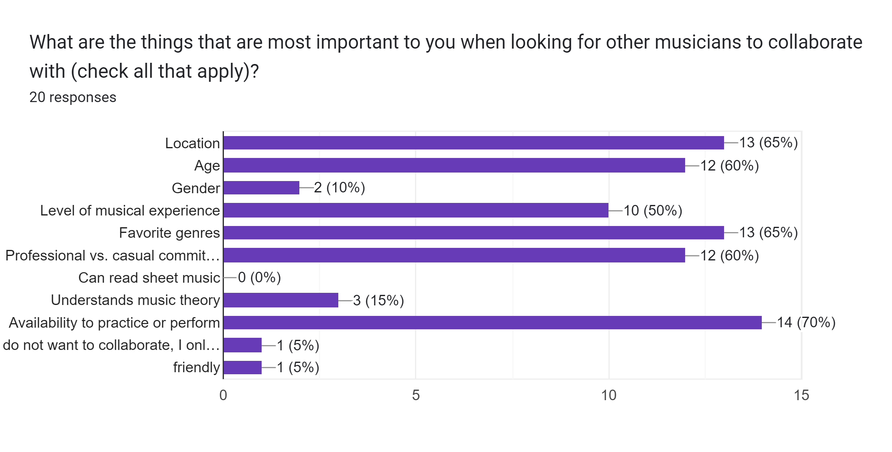
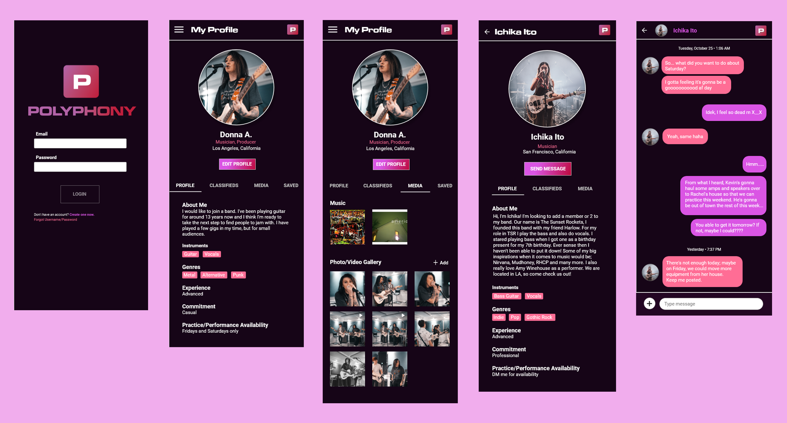
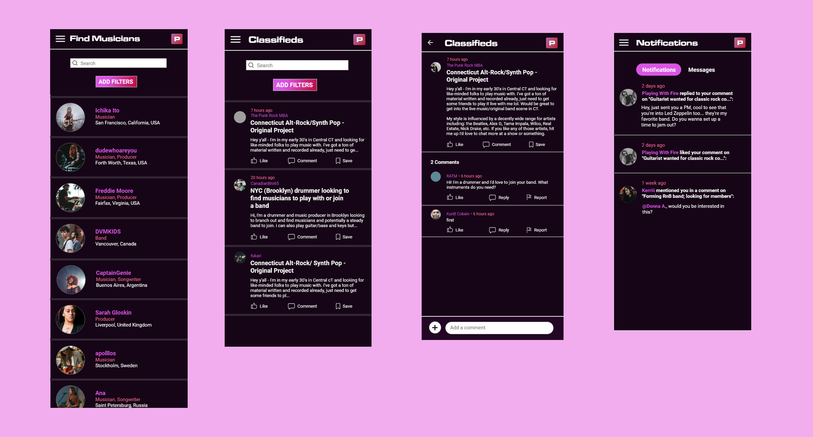

Polyphony Mobile App Prototype
Musician-finder app that lets musicians, bands, and producers connect with each other locally and worldwide.
Team Size
Individual
Roles
User Researcher, Interaction Designer, Presenter
Deliverables
High-fidelity Mobile Prototype
Tools
Adobe XD, Word
01. What is Polyphony?
There are many musicians that are looking to start a band or find other people to play music with, whether it be professionally or casually, and finding other musicians can be a challenge for some. Between genre preferences, location, and personality, there are many variables that factor into finding musicians that can gel well together. Using my experiences as a musician as a guide, I decided to create Polyphony, a musician/band-finder app that can help musicians and bands find and connect with each other, whether it be locally or worldwide.
02. Research
I wanted Polyphony’s audience to focus on musicians, especially since the purpose of the app is to serve as a hub to connect with other musicians for future collaboration (or even networking). While the app is open to musicians of all genres and ages, the app would most likely appeal to musicians within genres that are group-centric (e.g. rock, country, jazz, etc.), and would mostly be used by teenagers and young adults (18 to 35). With this in mind, I listed five goals I envisioned for the app.
User Goals
- Be able to search for musicians and filter by location and personal characteristics (e.g. instrument, age, sex/gender, preferred genre, level of experience)
- Search for bands and filter by location, genre, experience, and open slots by instrument
- Post and respond to musician/band want ads requesting musicians or to join a band
- Create unique user profiles as a hub to find information about a specific user and to facilitate messaging between users
- Upload samples of tracks, videos, and pictures for users to showcase their work so others can make more informed decisions on who they would most align with artistically or personality-wise
I then decided to conduct user research; because of the tight deadline I had for research, I decided to use an online survey, which would help me reach many people in a short amount of time. When creating my survey, my primary goal was to ask participants which features they would want to see in Polyphony, including features I found in competitor apps. I also gave them the chance to write out features that they’d want that weren’t mentioned. There were 20 participants.
Screenshot detailing some of my survey results.
I also conducted a competitive analysis of other apps that were similar, either directly (i.e. other musician-finder apps) or indirectly (i.e. social media/connection apps). The main takeaway I found was that they all had great features that weren’t combined into one app; this is where I felt Polyphony had potential value within the market.
BandFinder
Hendrix
Join-A-Band

Reddit (FindABand subreddit)

Craigslist
Angi
List of Polyphony's direct and indirect competitors that I researched. Text in blue indicates a direct competitor.
03. Defining the App
Desired Features
- User profiles to describe yourself
- Classified ads that users can post to receive responses from interested musicians
- Search feature to find musicians (with filters for more specific searches)
- Direct messaging
Using these features, I created a primary navigation structure for the main sections of the app, as well as a more detailed sitemap showing the structure of all pages:
- Login/Signup
- Musician Search
- Classified Ads
- My Profile
- Notifications/Messages
- Logout
Sitemap of Polyphony showing the overall page structure.
04. UI Design
When I began moving to the design phase of the project, I knew I wanted to create a distinct visual identity for the app. While my original vision started as being more image-centric with artwork inspired by photomontage album covers, I found this wasn’t practical for the app from an organizational and audience standpoint. I then decided that the best way to reflect my original idea was to incorporate album artwork influences into the typography and color scheme.
Typography
For my font choices, I went through a list of album artwork and the fonts they used. I chose a display typeface, Microgramma D Extended, for the headers, taken from the Tame Impala album ‘Currents’; I felt that its look fit with the theme of using technology to connect with others. For the body copy, I originally chose Helvetica, which was one of the most commonly used fonts out of the album artwork I researched. However, I eventually went with Roboto, a font which is very similar in look, but in my opinion looked better within the app combined with Microgramma D.
Tame Impala's Currents, which features the Microgramma D Extended font at the top.
Color Palette
I decided to choose a two-color scheme that would be used throughout the app. I felt that this represented the idea of multiple people coming together, which fits with the social aspect of Polyphony.
#DA55E4
#BD0839
App Icon
For the app icon and logo, I went with a minimalist design that reinforced the typographic and color choices that I decided for the app.
Logo/Icon
Logotype
With my visual design set, I went into creating my complete prototype.
05. Final Prototype
